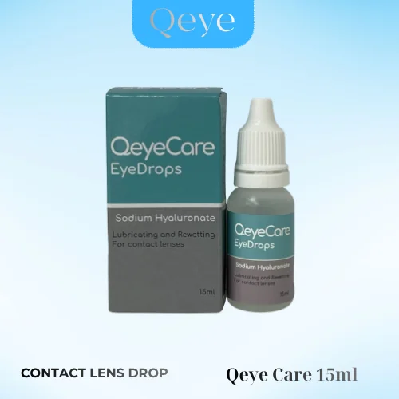

Nước nhỏ mắt đeo lens: giữ ẩm, làm mềm kính áp tròng cả ngày

Khô mắt, cộm và mỏi là cảm giác rất quen với người đeo kính áp tròng, nhất là khi ngồi máy lạnh hay nhìn màn hình nhiều giờ. Một chai nước nhỏ mắt dùng cho kính áp tròng phù hợp sẽ giúp mắt dịu lại và lens mềm hơn. Bài viết giải thích nước mắt nhân tạo, lens drop là gì, cách chọn và cách dùng đúng, cùng giới thiệu Qeye Care Drop được nhiều người đeo lens lựa chọn.
Vì sao người đeo lens hay bị khô mắt
Kính áp tròng nằm trực tiếp trên lớp nước mắt phủ bề mặt giác mạc. Khi đeo lens nhiều giờ, ngồi phòng máy lạnh, nhìn màn hình máy tính, điện thoại liên tục hoặc đi ngoài trời nắng gió, nước mắt bay hơi nhanh hơn. Lens dần mất nước, trở nên khô và kém mềm, khiến mắt cộm, mỏi, đỏ hoặc nhìn mờ thoáng qua.
Đây là lúc bạn cần một chai nước nhỏ mắt dùng cho kính áp tròng để bổ sung độ ẩm, giúp lens mềm trở lại và mắt dễ chịu hơn trong suốt ngày dài.
Nước mắt nhân tạo và lens drop khác gì nước nhỏ mắt thông thường
Nước mắt nhân tạo (hay nước nhỏ mắt nhân tạo) là dung dịch mô phỏng thành phần nước mắt tự nhiên, dùng để làm ẩm và làm dịu bề mặt mắt. Lens drop là cách gọi các loại nước nhỏ dưỡng ẩm lens mắt được thiết kế riêng để nhỏ khi đang đeo kính áp tròng.
Không phải loại nước nhỏ mắt nào cũng nhỏ được khi đang đeo lens. Một số thuốc nhỏ mắt chữa bệnh, thuốc làm trắng mắt (giảm đỏ) hay loại có chất bảo quản mạnh có thể bám vào lens, làm lens đổi màu, gây kích ứng. Vì vậy, khi đang đeo kính áp tròng, bạn nên chọn sản phẩm ghi rõ dùng được cho người đeo lens.
| Loại | Công dụng | Nhỏ khi đang đeo lens? |
|---|---|---|
| Nước nhỏ mắt cho người đeo lens (lens drop) | Cấp ẩm cho mắt, giữ lens mềm trong ngày | Được |
| Nước mắt nhân tạo thông thường | Làm ẩm mắt khô | Chỉ khi sản phẩm ghi rõ dùng được với kính áp tròng |
| Thuốc nhỏ mắt điều trị, thuốc làm trắng mắt | Điều trị bệnh, giảm đỏ | Không, cần tháo lens và dùng theo chỉ định |
| Nước ngâm lens | Rửa, khử khuẩn, bảo quản lens | Không nhỏ vào mắt |
Qeye Care Drop: nước nhỏ mắt cho người đeo kính áp tròng
Qeye Care Drop là nước nhỏ mắt cấp ẩm dành riêng cho người đeo lens, thuộc thương hiệu Qeye Care, xuất xứ Hàn Quốc. Sản phẩm được nhiều người đeo kính áp tròng lựa chọn nhờ giúp làm mềm lens, giảm cảm giác khô cộm ngay cả khi đang đeo.
- Cấp ẩm cho mắt và lens: bổ sung độ ẩm, giúp lens mềm trở lại sau nhiều giờ đeo.
- Nhỏ được khi đang đeo lens: không cần tháo lens ra, tiện dùng ở văn phòng, lớp học hay khi di chuyển.
- Chai 15ml nhỏ gọn: vừa túi áo, túi xách, mang theo cả ngày.
- Phù hợp nhiều loại lens: lens màu, lens cận, lens trong suốt, lens 1 ngày.
- Giá dễ tiếp cận: 70.000đ / chai, nên dùng hết trong khoảng 3 tháng sau khi mở nắp.
 Nước ngâm lensQeye Care 360mlDùng kèm để bảo quản lens120.000đ / chai
Nước ngâm lensQeye Care 360mlDùng kèm để bảo quản lens120.000đ / chai
 Nước ngâm lens cao cấpX2 Multiplus 360mlDùng kèm để bảo quản lens150.000đ / chai
Nước ngâm lens cao cấpX2 Multiplus 360mlDùng kèm để bảo quản lens150.000đ / chai
Cách dùng nước nhỏ mắt khi đeo lens
- Rửa tay sạch trước khi nhỏ mắt.
- Ngửa nhẹ đầu, nhìn lên trên, dùng ngón tay kéo nhẹ mi dưới xuống tạo thành túi nhỏ.
- Nhỏ 1 đến 2 giọt vào túi mi dưới. Không để đầu chai chạm vào mắt, mi mắt hay lens.
- Chớp mắt vài lần để dung dịch phủ đều lên bề mặt lens và mắt.
- Đậy nắp ngay sau khi dùng để tránh nhiễm bẩn.
Thói quen giúp giảm khô mắt khi đeo lens
- Không đeo lens quá 8 tiếng mỗi ngày và không ngủ khi còn đeo lens.
- Áp dụng quy tắc 20-20-20: cứ 20 phút nhìn màn hình, hãy nhìn xa khoảng 6 mét trong 20 giây.
- Uống đủ nước, hạn chế ngồi ngay hướng gió máy lạnh, quạt.
- Vệ sinh và ngâm lens bằng nước ngâm lens chính hãng sau mỗi lần đeo.
- Thay lens đúng hạn sử dụng, không cố dùng lens đã hết hạn.
Nếu đã nhỏ mắt mà vẫn khô rát kéo dài, đỏ, đau hoặc nhìn mờ, hãy tháo lens và đến chuyên viên nhãn khoa & nhãn kính để được kiểm tra.
Mua nước nhỏ mắt Qeye Care Drop ở đâu
Qeye Care Drop chính hãng có tại hệ thống cửa hàng và đại lý Qeye Lens trên toàn quốc. Bạn có thể mua kèm khi chọn lens hoặc nước ngâm để được tư vấn cách chăm sóc mắt đúng cách. Xem thêm nước ngâm, nước nhỏ mắt và phụ kiện lens trên trang chủ.
Đại lý, cửa hàng muốn nhập sỉ vui lòng liên hệ Zalo 0906 629 366 hoặc xem chính sách đại lý.
Câu hỏi thường gặp
Đang đeo lens có nhỏ nước mắt nhân tạo được không?
Được, nếu sản phẩm ghi rõ dùng được cho người đeo kính áp tròng như Qeye Care Drop. Không nhỏ thuốc điều trị hoặc thuốc làm trắng mắt khi đang đeo lens.
Lens drop là gì?
Lens drop là nước nhỏ dưỡng ẩm dành cho người đeo kính áp tròng, giúp cấp ẩm cho mắt và giữ lens mềm trong suốt thời gian đeo.
Một ngày nhỏ nước nhỏ mắt cho lens mấy lần?
Có thể nhỏ khi thấy khô, cộm hoặc mỏi mắt, mỗi lần 1 đến 2 giọt. Hãy làm theo hướng dẫn trên bao bì sản phẩm.
Có dùng nước ngâm lens để nhỏ mắt được không?
Không. Nước ngâm lens dùng để rửa và bảo quản lens, không dùng để nhỏ trực tiếp vào mắt.
Qeye Care Drop giá bao nhiêu, mua ở đâu?
Qeye Care Drop chai 15ml có giá tham khảo 70.000đ, bán tại hệ thống cửa hàng và đại lý Qeye Lens toàn quốc. Gọi hoặc nhắn Zalo 0906 629 366 để đặt hàng.
Lens áp tròng là thiết bị y tế. Nội dung chỉ mang tính tham khảo, không thay thế tư vấn của chuyên viên nhãn khoa & nhãn kính. Hãy đọc kỹ hướng dẫn trên bao bì trước khi dùng.